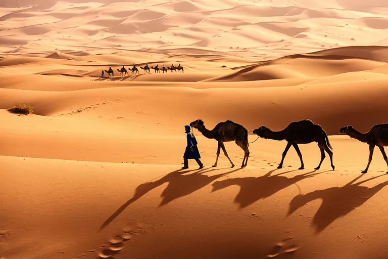
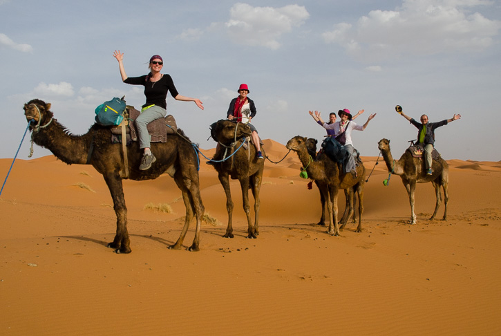
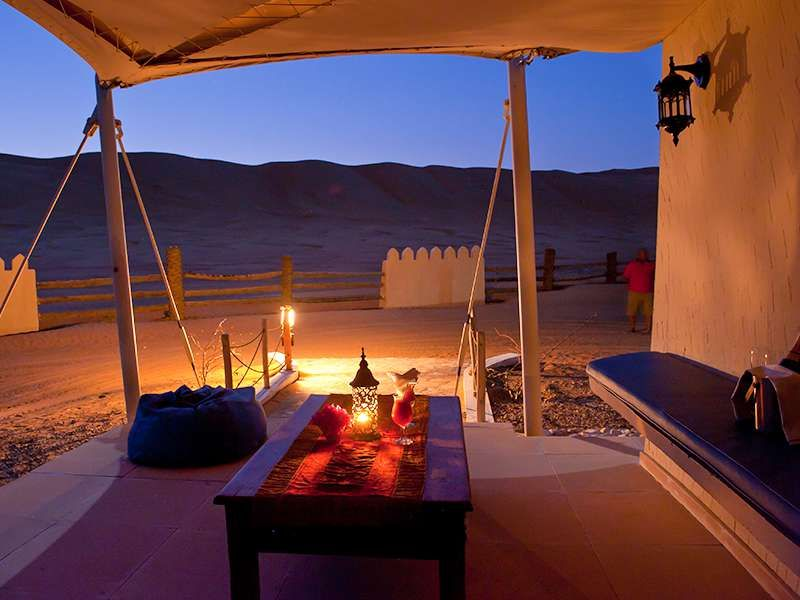
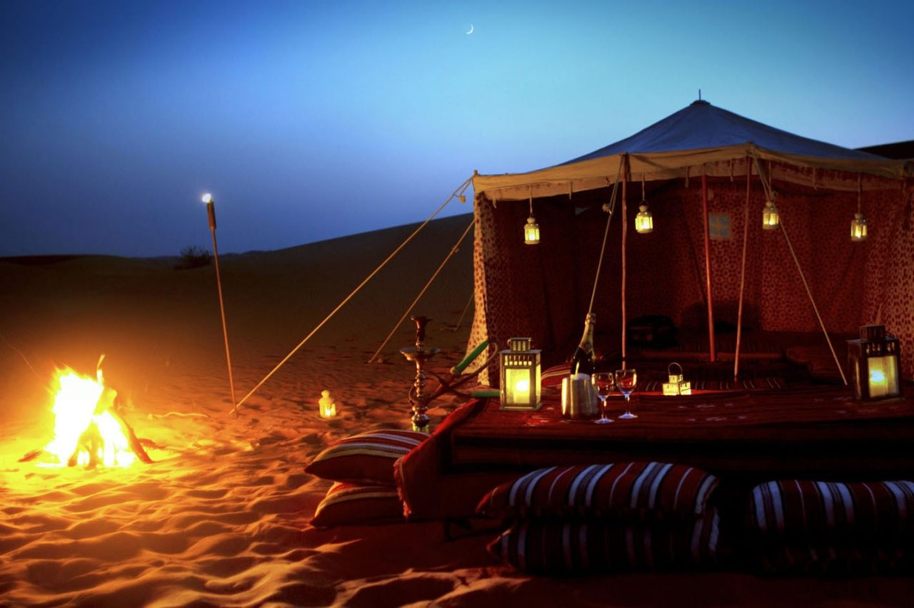
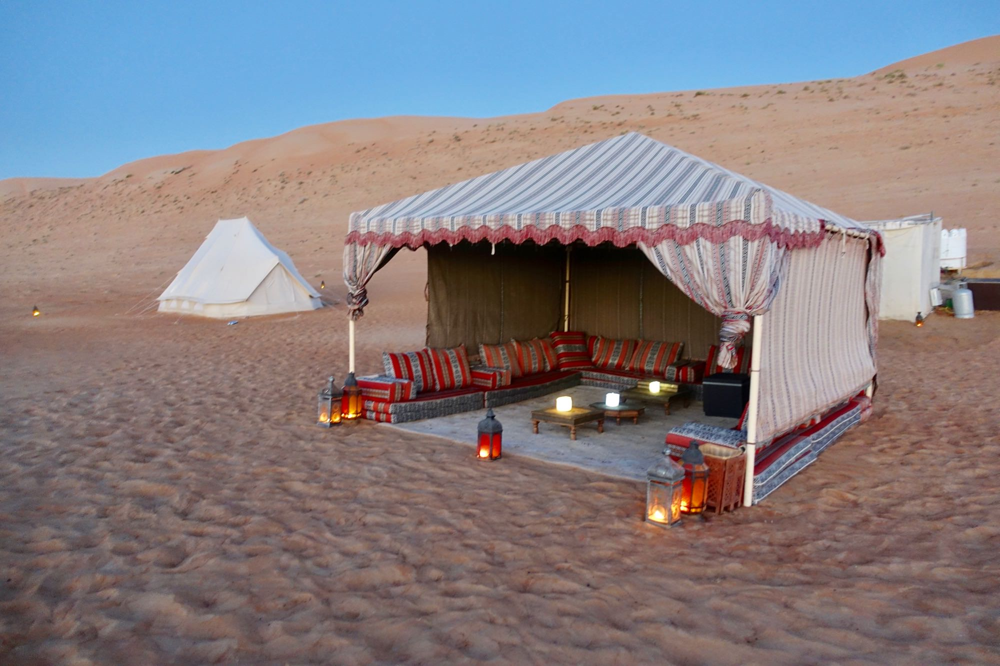

Let's go to...
Explore the Sahara!

The dunes and plains of the Sahara strecth into the distance for an eternity, reaching from the Atlantic Coast to the Red Sea, it covers a quarter of the African continent and is the size of the United States!
What to bring... check your checklist!
A windbreaker or light jacket
Although there is an average temperature of over 40 degrees celcius, this will be needed to survive the cooler nightsA headscarf or desert hats
To block the sun and dust.Hiking Boots
For the day and night treks.Comfortable jeans or trousers
To cover your whole leg to protect from the camel's rough fur.Water bottle
We've got the water, fill up at each camel!
Camel rides - The most reliable way to travel

Hold on tight while going over the sand dunes!
Glamp in the desert tents!
Sleep under the stars, enjoy the landscape...


